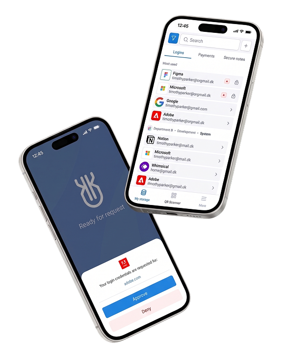
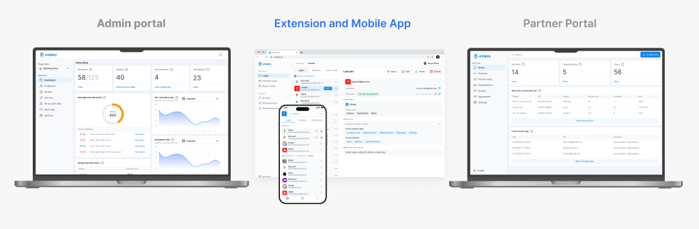
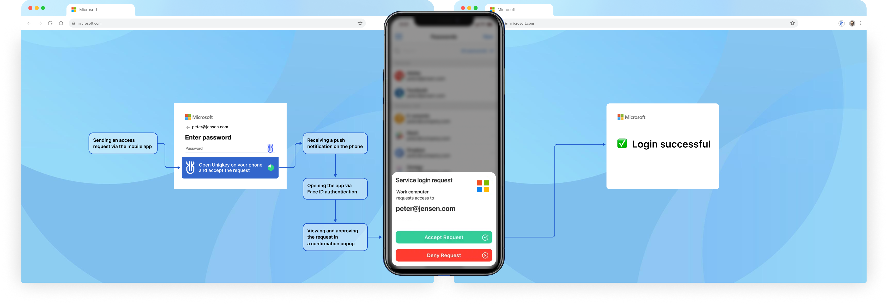
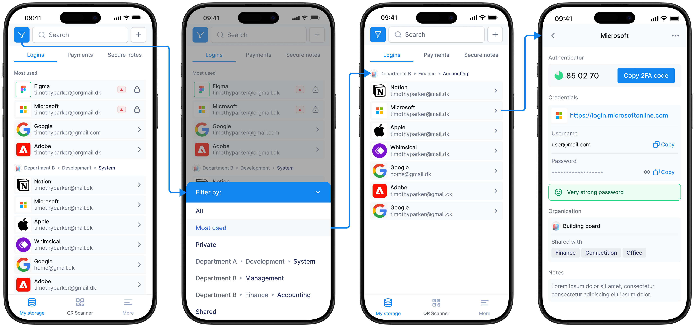
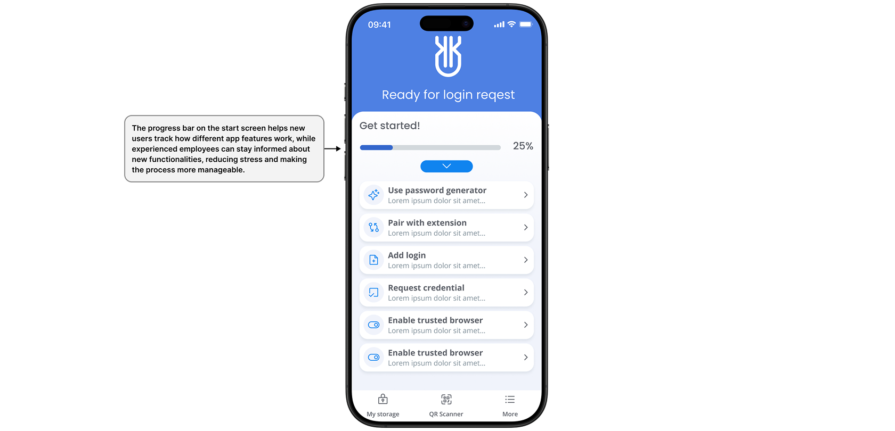
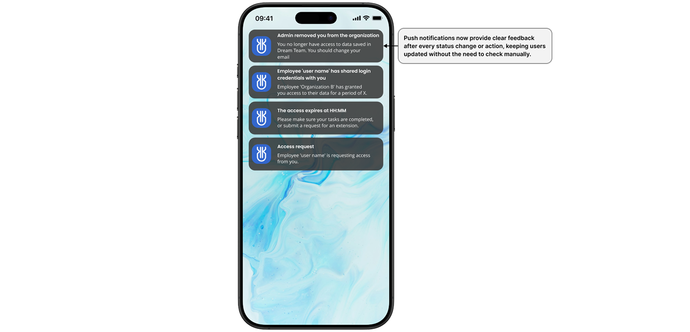
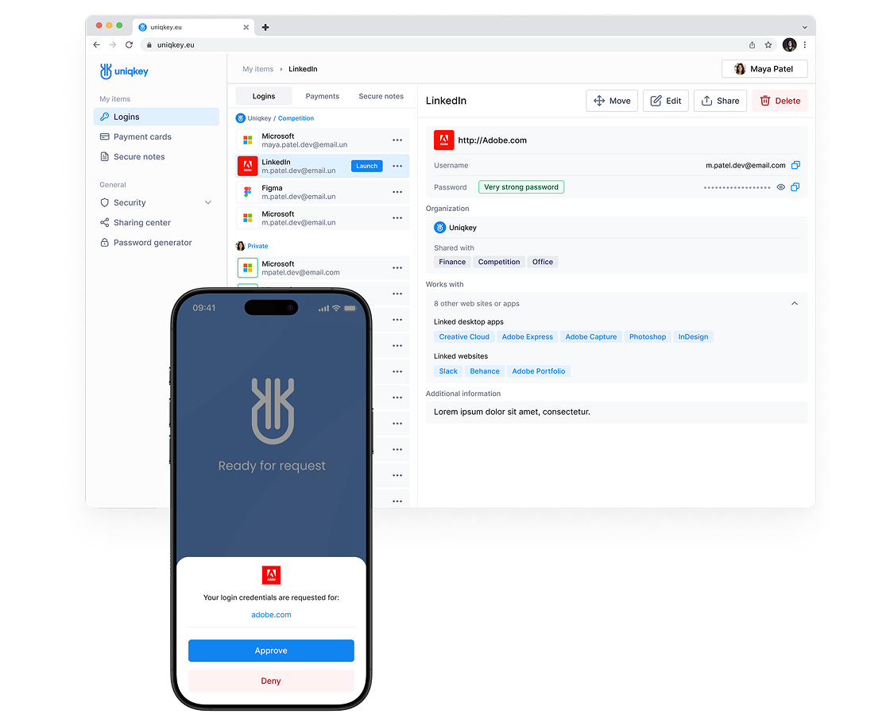
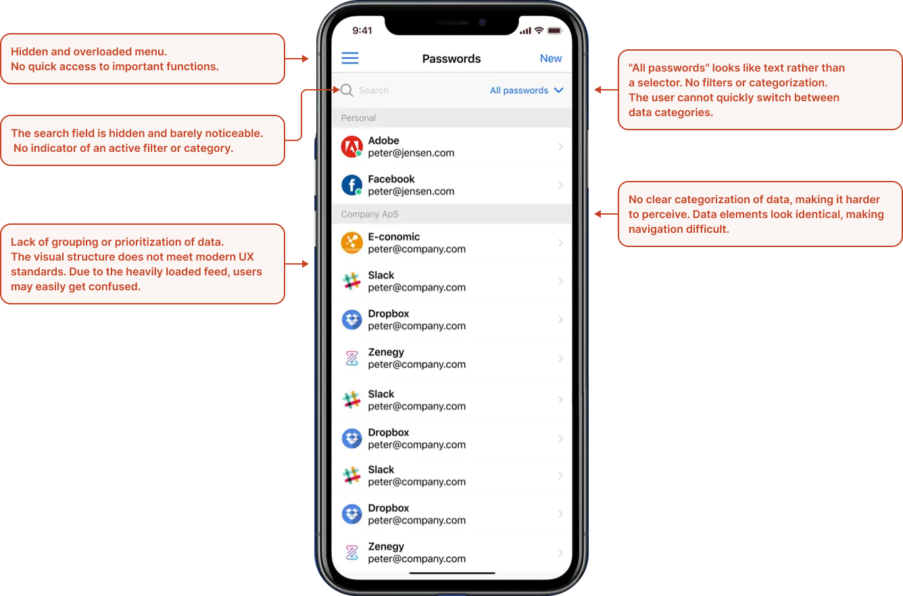
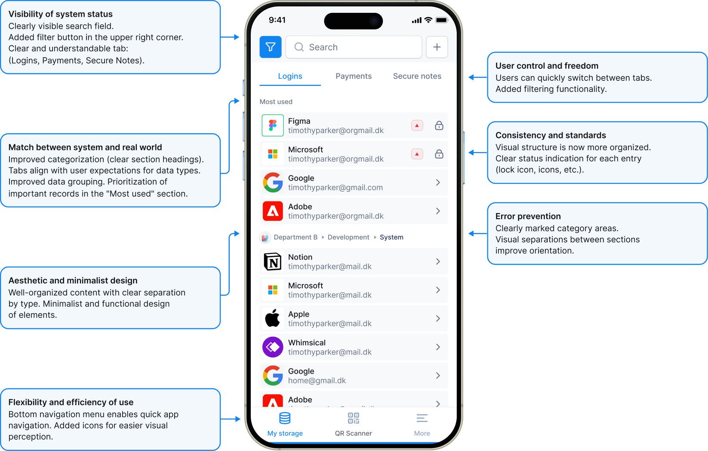

Streamline UX
for 2FA and
Security
In this case study, I showcase how I refined Uniqkey's mobile app UX to streamline authentication and enhance secure access management.
Impact:
+40%
Faster information findability, measured in usability testing after the first iteration
20%
of users didn't even notice what changed, only that the app got easier to use.
Product Scope
The mobile app is one piece of a larger ecosystem. Corporate logins, permissions, and password policies are set and managed by the admin on the Admin Portal, the mobile app is where employees access and use that data day to day

Context
Uniqkey's mobile app is a password manager and 2FA companion to the Admin Portal — the key to accessing both personal and corporate data. It had grown cluttered and inconsistent as features piled up. I redesigned the core flows twice: once to fix usability for existing users, once to adapt the same product for enterprise B2B teams.

My Scope
Role:
I worked as a Product Designer on this flow for three years, continuously observing users and implementing iterative improvements. This process included an audit of the existing app, the first redesign iteration, usability testing, and a second iteration to adapt the product for B2B customers.
Constraints:
The main constraint was that this is a live product with a massive active user base, ranging from large enterprises to government agencies. We couldn't introduce drastic functional changes; instead, we had to implement updates smoothly without disrupting the users' workflow or causing confusion.
The Challenge
The primary challenge was balancing the fast-paced business stakeholders' demand to display all services upfront with the critical need to prevent cognitive and system overload. By conducting a user flow study, I successfully advocated for prioritizing only the essential data and proposed a gradual rollout of complex features, such as advanced filtering and role-based sharing.
This strategic negotiation aligned our vision and established a clear roadmap for non-disruptive improvements.
Goals:
- Prioritize essential elements to prevent overload.
- Reduce risks associated with filtering and sharing options.
- Allow controlled access with new restrictions.
- Introduce changes step by step for gradual adoption
- Reduce cognitive load while improving control and efficiency
Before:
Essential navigation tools and search fields were buried in an unstructured list, making the app confusing to use.

Research
Support team feedback showed that simple usability tweaks would be enough, so I started with a heuristic analysis.
Pain points for users:
Undefined App State on Launch
Users expected to see an immediate login request popup upon opening the app. Instead, they were presented with a list of saved services in the first few seconds, causing confusion.
Unclear Steps When Missing Push Notifications
If users missed a push notification, they had to manually trigger it again. This resulted in receiving all missed notifications at once, with the relevant one buried at the bottom, increasing cognitive load and delaying access.
Lack of Clear Visibility for Important Updates
Users struggled to find security-related changes, check access to stored passwords, or manage permissions efficiently.
Additional Features for Product Enhancement:
Optimizing the authentication process for fast and intuitive confirmation via mobile, ensuring seamless user access to the service.
Introducing new features, such as adding payment cards and notes, improving data filtering and sorting for better management of sensitive information.
Enhancing app navigation by implementing a bottom navigation menu for easier access to core features like the Security Dashboard, profile management, and access settings.
Improving push notifications, ensuring that every action or status change is accompanied by a notification, keeping users updated with the latest security changes.
Adding different access levels, allowing more flexible permission management and restrictions, enhancing security and control over data.
Implementing onboarding to introduce users to the process, as it was previously absent. This will help them understand key actions and discover new features efficiently.
Analogs referenced:
Key Solutions
B2B: Access Rights and Department Filtering

Problem
Enterprise clients (such as government and financial institutions) require department-level access control and expect a more formal, restrained aesthetic, elements that were missing in the first version.
Solution
I made the design more restrained and formal, feeling more like a structured document rather than a bright B2C product, and implemented a robust B2B filtering system. As shown in the flow, users can apply department filters (e.g., Department A/B → Development/Management/Finance) to navigate the list. Selecting an item opens a detailed login view featuring a 2FA code, password visibility with a "Very strong password" indicator, custom notes, and sharing tags. I also designed this structure to support granular permissions, such as Full/Limited access and time restrictions.
Why?
This wasn't just a rebranding, but a recalibration for a specific business and bureaucratic audience that often thinks in terms of processes and legalities. A formal appearance and granular access control are strict requirements for corporate buyers, not merely aesthetic whims.
Other Features
Onboarding and Gradual Feature Introduction
Problem
There was no onboarding process at all. New features and steps remained unclear without proper explanation.
Solution
We introduced a startup onboarding checklist (Password generator, pair with extension, add login, request credential, enable trusted browser) accompanied by a progress bar (e.g., showing 25% completion).
Why?
A progress bar allows new users to track their mastery of features and keeps experienced users informed about new updates—all without making them feel like they are being forced through a mandatory tutorial.

Notifications
Problem
Push notifications were getting lost. Missed notifications had to be triggered manually, which caused all missed alerts to arrive at once in a single batch, burying the most critical one among the rest.
Solution
A dedicated notification feed with a clear status for each event (e.g., access granted/revoked, access requested, access expiring). This ensures updates are always visible within the app, not just at the moment a push notification is sent.
Why?
The system should explicitly communicate changes in its state rather than relying on the user catching a temporary push notification in time.

Also, Mobile Working Together with Web Extension
A password copied from the browser extension still needs confirmation from the mobile app, the same push-approval flow already shown above (login request, source clearly labeled, Approve/Deny). The extension handles the day-to-day copy-paste; the phone stays the actual key.

The Shift
Two moments where the redesign is easiest to see at a glance.


Results
+40% faster information retrieval: Users found what they needed quicker, resulting in increased overall satisfaction.
Zero friction from updates: 20% of users didn't notice specific changes, and
there were no complaints,
proving that the interface simplification was smooth
and didn't break their familiar workflow.
Team & Business Impact:
- 35% revenue growth: Revenue increased by 35% during this development period (achieved as a combined result of the entire team's effort and overall growth factors, not solely due to design).
- Market expansion: The product successfully expanded beyond Scandinavia into new European markets.
- Industry recognition: Established presence at international cybersecurity summits.
-
Ecosystem integration: The app is a core part of the Uniqkey
product ecosystem.
You can learn more about the product in detail here: Admin side
Reviews:
Ready to architect your next product?
Whatever's easiest for you — reach out and let's talk.
Contact Me